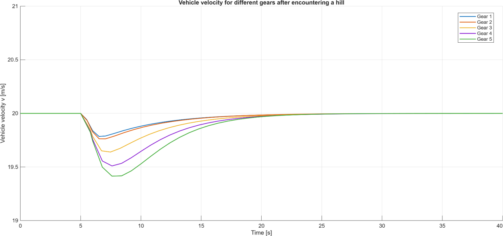
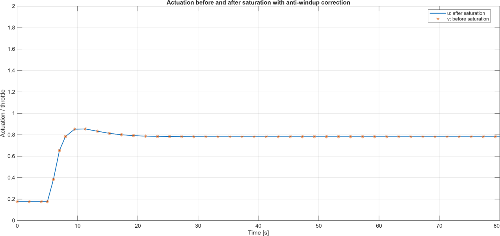
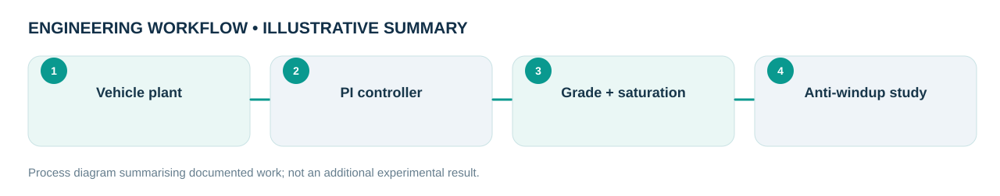

Engineering problem
How can a longitudinal vehicle-speed controller handle road grades and saturated throttle commands without excessive windup?
Modelled a vehicle longitudinal plant, designed PI speed control, and explored road-grade disturbances, actuation limits, anti-windup and sensitivity functions.
My role and technical ownership
I wrote the modelling and control simulations, studied disturbances and anti-windup and analysed sensitivity/robustness in coursework.
How I approached the work
- Built a simplified longitudinal vehicle model and tuned PI speed regulation.
- Introduced gradient disturbances and actuator saturation to challenge the nominal design.
- Compared the transient under anti-windup and unmodified integral action; inspected sensitivity transfer functions.
What the evidence shows
One reported disturbance scenario shows a peak speed overshoot near 0.02 m/s with anti-windup versus ~0.885 m/s without anti-windup. These figures are specific to that setup.
Design files, models & results
Original CAD screenshots, simulation plots or project photographs are shown wherever they were available. Select a figure to open the larger file. Workflow graphics are clearly labelled as illustrative.




Limitations and engineering learning
Results are specific to simulated parameters and disturbance setup.
Engineering takeaway: The study illustrates why actuator constraints must be included in controller assessment; it does not represent physical road testing.